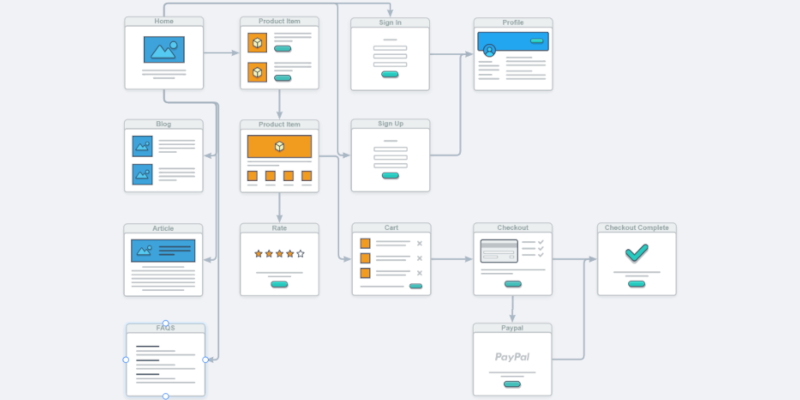

Application Flowchart
2021-09-30
 An example of a web application flowchart.
All applications have two layers.
Like the floor plan and electrical wiring of a house.
Its important to clearly define each layer.
-
The User Layer
This equates to the floor plan. It includes all the screens the user will see and interact with. -
The Data Layer
This equates to the electrical wiring. It is invisible to the user. It includes the paths the data takes within the application. Moving from forms and fields to labels and tables. As well as the API calls it makes and receives to and from the Database.
While it can help to know where dynamic screens exist and how they display components differently depending on user access and other variables.
Most of the Data Layer is irrelevant to me.
Because it doesn't affect the design of the User Interface.
As a UI Designer I need a User Layer Flowchart that shows the individual screens of the application and how they are connected together.
Along with a top to bottom list of the components that exist on each screen.
Once I have this I'm able to create a lo-fi wireframe and then design an interactive prototype of the application.
There are many tools available to create flowcharts for both layers of your application. Review each one and pick the tools that works best for you.
Paid Tools
- Microsoft PowerPoint
- Microsoft Visio